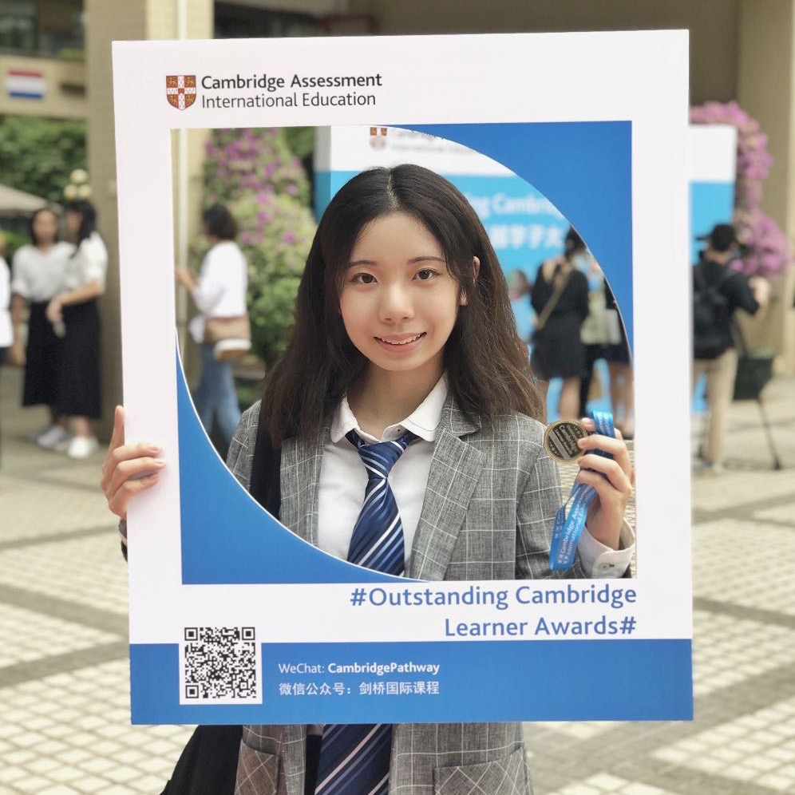
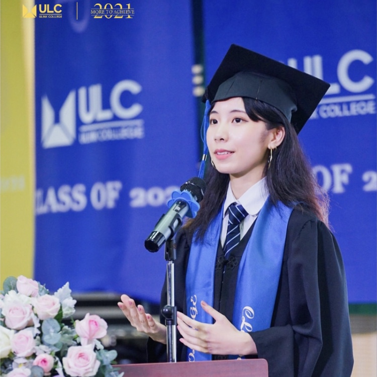

I grew up in Guangzhou, China, and I'm a huge fan of Cantonese cuisine.
In 2016, I won a second prize for making stop-motion animations and thus
participated in a summer camp in Cueca, Spain.
In 2017, I went to Ulink College(ULC) and traveled to Brisbane,
Australia, for a two-month exchange program. At the same time,
I passed JPLT (Japanese Proficiency Language Test) and received
a certificate of N2 with a full mark on Listening.
After studying CAIE for two years, I won the
Outstanding Cambridge Learner Award
by achieving Top in China for Accounting.
To enrich my study of Economics, I participated in the summer camp
at the University of St. Andrews in Scotland.

Photo of me in the Outstanding Cambridge Learner Award venue
Through my years at ULC, I volunteered as an English peer mentor,
co-founded the school magazine as a design director, and ran the
graduation team as an executive leader. In academics, I was
interested in Behavioral Economics and applied to the University
of Cambridge with a personal statement discussing my research on
evaluating to what extent nudge influences teenagers' decision on a
healthy diet. I graduated as a valedictorian
for the Class of 2021.

Photo of me in the graduation ceremony
Outside of study, I spend my spare time mostly watching anime
and hitting the gym. I also enjoy learning languages and reading
books (any book recommendation is welcome!).